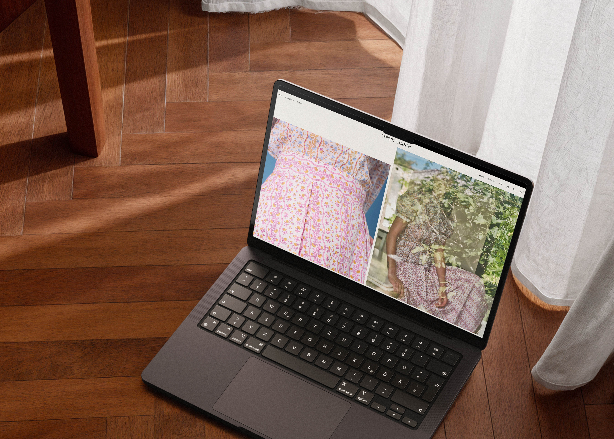
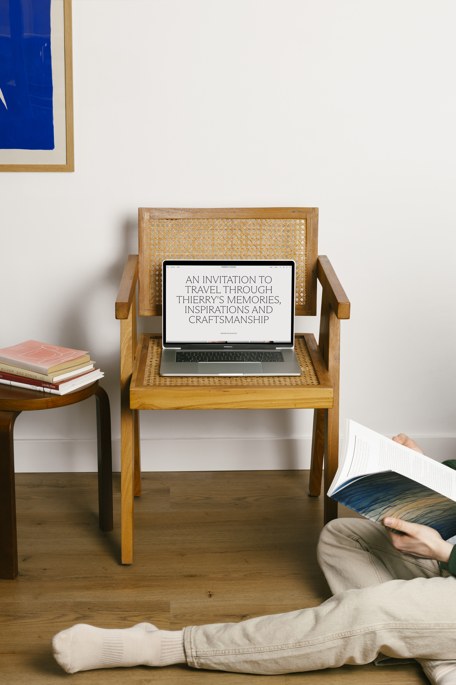
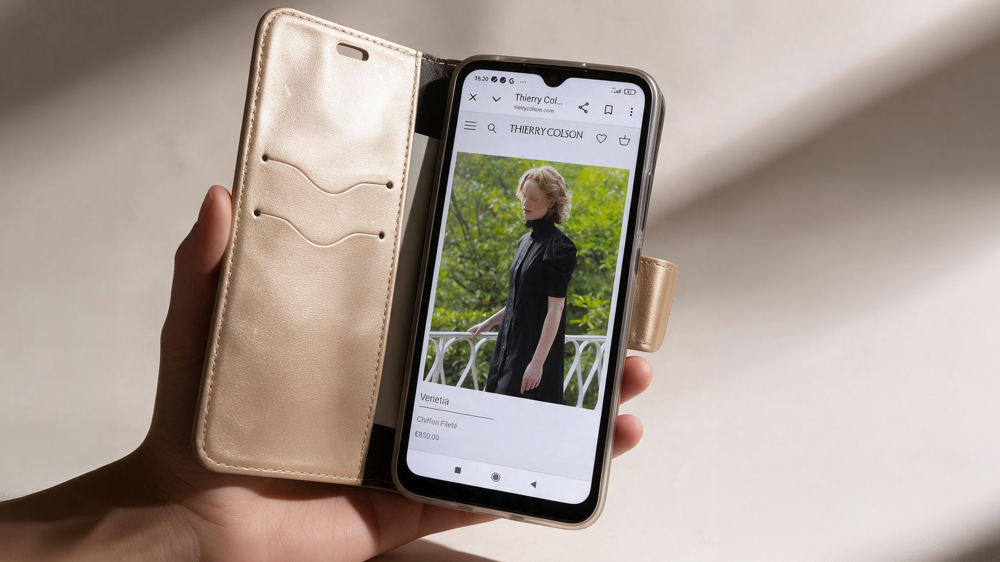

Thierry Colson is a French luxury fashion house rooted in a distinctive visual language of Art Nouveau, Baroque references and auteur cinema.



The new digital experience was conceived somewhere between a fashion magazine and an e-commerce platform.
Minimal architecture, oversized typography and full-bleed imagery create a sense of visual immediacy.
Every element of the interface was designed and developed as part of a bespoke system. From the image-led navigation and interactive typography to the animated feline Easter egg, the experience is built around small moments of discovery.
The project demanded a high level of precision within a tight timeframe and against ambitious client expectations.
The result is a digital environment that brings Thierry Colson’s distinctive universe into a contemporary, immersive and highly considered space.